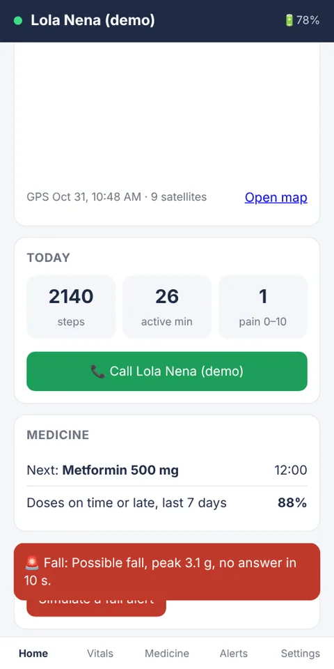
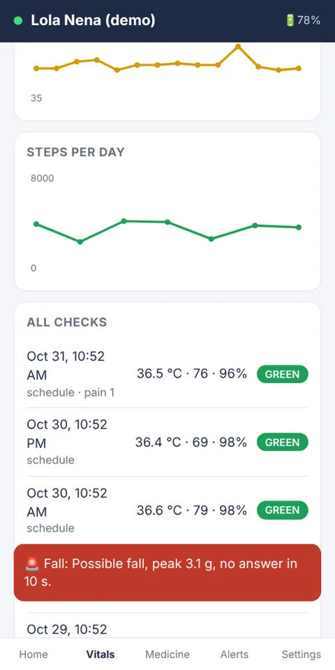
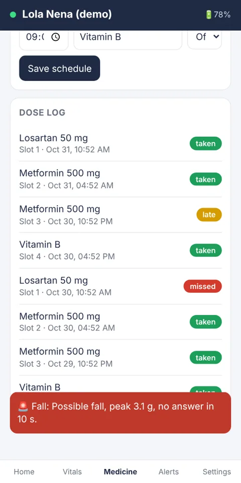
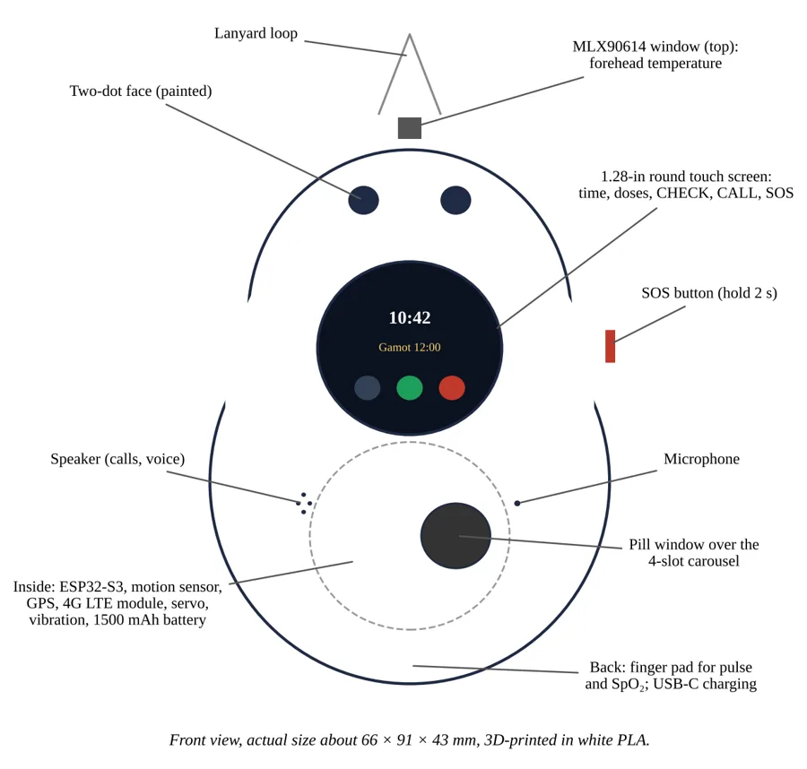
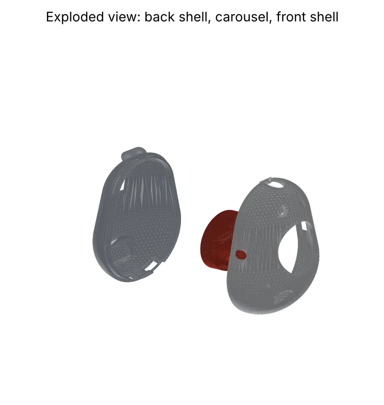
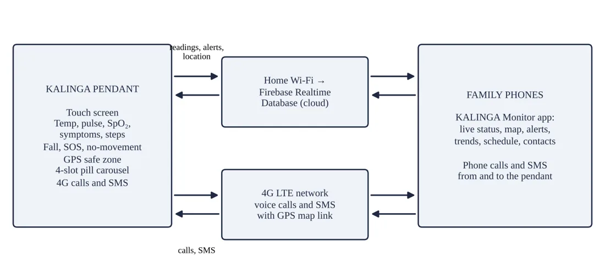

Wearable health pendant + family app
KALINGA is a low-cost, 3D-printed, Baymax-inspired pendant with a round touch screen. It checks temperature, pulse, oxygen, and symptoms, counts steps, opens the right pill slot on time, shows where Lola is on a map, calls the family through 4G with one touch, and alerts everyone when there is a fall, an SOS, or a missed dose.

Get the app
Install the app straight from this page. It gets its own icon on your home screen, opens in its own window, and shows Lola's readings and alerts the moment the pendant sends them.
Tap Try the demo in the app to see every screen with sample data, with or without a pendant. To connect a real pendant, sign in with the family's Firebase account (see the engineering notebook, Entry 9).
Download the app as one file (KALINGA-Monitor.html). It opens in any browser without installing.
To remove the app, uninstall it like any other app.
Features
Every screen below is from the working KALINGA Monitor app.
Forehead temperature without touching, and pulse rate and SpO₂ from a finger pad, twice a day or on demand.
Four slots open one at a time at their scheduled times. Each dose is logged as taken, late, or missed.
Falls, a held SOS button, and long periods without movement reach the family's phones in seconds.
See Lola on a map. Leaving the safe zone around home sends an app alert and an SMS with a map link.
Lola taps CALL to reach family; family calls are answered by the pendant. After a fall, it calls automatically.
A round color screen with three big buttons, CHECK, CALL, and SOS, and prompts in Filipino.
Pain score, dizziness, shortness of breath, chest pain, steps, and active minutes, with trends in the app.
Edit medicines, contacts, and the safe zone, ask for a check now, call the pendant, or make it ring.
Only the family's signed-in accounts can see the data, under Firebase rules and the Data Privacy Act.


The pendant
About 66 × 91 × 43 mm, printed in white PLA with an original two-dot face and a 1.28-in round touch screen, worn on a breakaway cord.


How it works
Readings, doses, and location go over home Wi-Fi to a Firebase database, and the app receives every change as a live stream. Calls and SMS alerts go through the 4G network, so they work outside the home too.

Important. KALINGA is a student research prototype, not a medical device. It reminds, checks, and alerts; it does not diagnose or treat. Always follow the advice of a doctor or health worker.
Downloads
Everything needed to print, wire, program, and test the pendant.